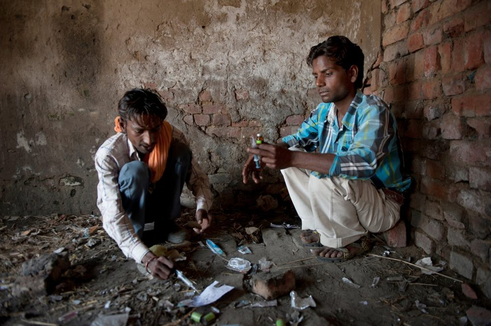
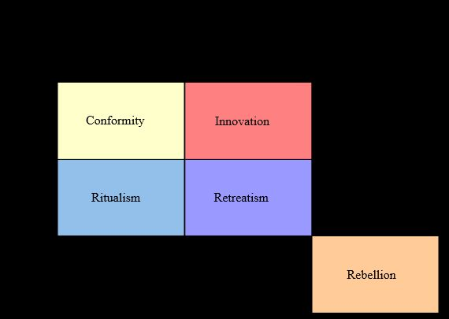

R.K. MertonHigh priority
Merton turns functionalism into a tool for hidden purposes and for explaining deviance as structural strain. Every answer needs one example and the persistent-anomie contrast.
Chapter map#
- Merton
Critique of functionalism
- Universal functionalism
- Functional unity
- Indispensability
Functions
- Manifest
- Latent
- Dysfunction
Reference groups
- Selection factors
- Relative deprivation
Deviance
- Goals vs means
- Five adaptations
Anomie
- Merton vs Durkheim
Criticisms
- American context
- Cohen
- Cloward and Ohlin
Exam lens#
The story first#
In simple words#
- Merton criticises classical functionalism's postulates of universal functionalism, functional unity and indispensability.
- He adds manifest and latent functions and dysfunctions to make functional analysis rigorous.
- Reference groups and relative deprivation explain how people judge themselves.
- In Social Structure and Anomie, deviance comes from the strain between cultural goals and legitimate means: conformity, innovation, ritualism, retreatism, rebellion.
| Term | In plain words |
|---|---|
| Manifest function | Intended and recognised consequence of an institution. |
| Latent function | Unintended and unrecognised consequence. |
| Dysfunction | Negative consequence of a social practice. |
| Reference group | Group used as a standard to evaluate one's own feelings, attitudes and behaviour. |
| Relative deprivation | Dissatisfaction from comparing oneself with those better off. |
| Deviance | Acts that do not conform to norms and invite negative sanctions. |
| Anomie (Merton) | Structural strain between cultural goals and legitimate means; persistent. |
| Anomie (Durkheim) | Normlessness during rapid change; temporary and abnormal. |
| Innovation | Accepts cultural goals, rejects or lacks legitimate means. |
| Ritualism | Scales down goals but rigidly follows means. |
1 · R.K. Merton#
- Robert K. Merton (1910-2003) was an American sociologist who profoundly shaped 20th-century sociological theory.
- Born into a working-class Jewish immigrant family in Philadelphia, he rose through scholarships and academic brilliance to study at Temple University and later pursue his PhD under Pitirim Sorokin at Harvard.
- His career was primarily associated with Columbia University, where he mentored generations of sociologists.
- Merton is celebrated for transforming structural functionalism into a more analytically flexible theoretical approach.
- His key contributions include the refinement of functional analysis, the concept of manifest and latent functions, middle range theory, strain theory of deviance, role-set, reference group theory, and the sociology of science.
2 · Merton’s Criticisms of Classical Functionalism#
- Classical functionalists such as Bronislaw Malinowski and A.
- R. Radcliffe-Brown made some broad assumptions about the nature of social systems and social phenomena.
- Merton respected the functionalist tradition but felt that its underlying postulates were overstated, theoretically limiting, and empirically unverifiable.
- Hence, he reformulated functionalism by criticizing three key postulates and replacing them with a more rigorous analytical framework.
- In his book Social Theory and Social Structure, Merton specifically criticized:
3 · 1. Postulate of Universal Functionalism#
- This postulate holds that all social or cultural forms have positive functions.
- Malinowski, says Merton, advances this in its most extreme form.
- As Malinowski says, ‘In every type of civilisation, every custom, material object, idea and belief fulfils some vital function’.
- According to Merton, functionalists overstated the functionality of every cultural item.
- Merton contends that any existing cultural item may be functional (having positive consequences), dysfunctional (having negative consequences), or non-functional (having no effect) for specific social groups.
- 2. Postulate of Functional Unity assumes that all parts of the social system are inter-related and interdependent.
- A change in any one part of the society is assumed to produce changes in all other social institutions.
- It assumes that different social institutions work together with internal consistency and harmony.
- Merton suggests that this assumption may not be true for highly complex societies.
- 3. Postulate of Indispensability This postulate states that since the existing social institutions perform some vital functions for the society; the society cannot exist in their absence.
- In other words, the social institutions (performing vital social functions) are indispensable for the society.
- A functionalist analysis, Merton says, should not assume anything to be indispensable.
- There may be functional alternatives, equivalents or substitutes.
- In other words, the same vital function (served by a given institution), may be fulfilled by another institution under changed circumstances.
- Merton’s critique of classical functionalism marked a turning point in functional theory in sociology.
- By challenging some of its basic assumptions, he created space for a more flexible and empirically grounded form of functional analysis.
- His emphasis on dysfunctions, functional alternatives, and functional autonomy enabled sociologists to study how complex societies adapt to change without assuming automatic harmony and integration.
4 · Manifest and Latent Functions#

- Robert K. Merton introduced the concepts of manifest and latent functions to refine functional analysis and to make it more analytically rigorous and empirically grounded.
- Merton first systematically formulated these concepts in his influential book "Social Theory and Social Structure" (1949), which remains a foundational text in functionalist sociology.
- He argued that classical functionalism tended to assume that all aspects of culture contribute positively to social stability, often ignoring unintended consequences or failing to distinguish between intended and unintended outcomes.
- By separating manifest from latent functions, Merton created a conceptual tool that enabled sociologists to analyse both the obvious, conscious purposes of social practices and the unintended, hidden consequences that may be equally important in maintaining or disrupting social life.
- Manifest functions refer to those positive consequences of any social practice, institution, or cultural pattern which are intended as well as recognized.
- They are the outcomes that actors consciously seek to produce when they engage in a particular action.
- For example, the manifest function of schooling is to impart knowledge and skills.
- Actors generally understand these consequences and evaluate actions in terms of these explicit goals.
- Latent functions, by contrast, refer to those positive consequences of any social practice or institution which are neither intended nor recognized.
- These are the hidden consequences of actions or institutions, which may nevertheless have significant social effects.
- These consequences may not be apparent to participants and may even contradict the intended aims.
- For example, a latent function of schooling may be to allow the parents time for themselves free from the responsibilities of child care.
- Schooling also delays entry into the labour market, reducing youth unemployment and managing demographic pressures, while providing a socially acceptable space for adolescence.
- Schools also become venues for the creation of peer cultures and friendship networks, that shape later life trajectories.
- Additionally, they reinforce patriotism and national identity through textbooks, rituals, and celebrations, helping to reproduce the ideological foundations of the nation-state.
- A classic example used by Merton to illustrate manifest and latent functions is the Hopi Indian rain dance.
- The manifest function of the rain dance is to produce rainfall, a clearly intended outcome linked to agricultural survival.
- However, regardless of whether the dance succeeds in producing rain, it generates latent functions - such as reinforcing group solidarity, confirming shared beliefs, providing emotional reassurance, and preserving cultural identity.
- These latent consequences, though unintended, play a more stable and significant role in maintaining social cohesion than the manifest purpose itself.
- In other words, even if the manifest aim fails, the ritual persists because its latent functions fulfil crucial social needs.
- Manifest function of schools is to impart education.
- But do they fulfill any latent functions?
- In Merton’s framework, unintended consequences and latent functions are related but not identical concepts.
- Unintended consequences refer broadly to outcomes of social action that were not consciously intended or anticipated by actors.
- These may be positive, negative, or neutral, and they can occur at any level of social life.
- In contrast, latent functions are a specific subset of unintended consequences - those unintended outcomes that contribute to the adjustment, adaptation, or maintenance of the social system.
- In other words, all latent functions are unintended consequences, but not all unintended consequences qualify as latent functions.
- For example, an unintended consequence might lead to maladjustment, or it may be accidental or irrelevant, whereas a latent function has systemic significance, even though actors are unaware of it.
- This distinction allowed Merton to separate dysfunctional and non-functional by-products of action from unrecognized but functionally important outcomes, giving functional analysis greater analytical precision.
- Merton also identified manifest and latent dysfunctions, which refer to the recognized and unrecognized negative consequences of social actions or institutions.
- Manifest dysfunctions are the harmful effects known to the actors, whereas latent dysfunctions refer to unexpected negative outcomes that remain unrecognized by the actors.
- For example, manifest dysfunctions of schooling are the academic stress and bullying faced by students.
- Latent dysfunctions of schooling may be reproduction of class inequalities, sexual harassment, and social exclusion of students through peer hierarchies.
- By including dysfunctions within functional analysis, Merton demonstrated that social practices do not always contribute to equilibrium, and that functional analysis must account for instability and maladaptation.
- Significance of Merton’s Concepts of Manifest and Latent Functions and
5 · Dysfunctions#
- 1. Enables deeper understanding: This distinction helps us to go beyond the common-sense perception of the world.
- A notion like latent function opens your eyes, and enables you to see the hidden purposes of many social practices and cultural beliefs.
- 2. Explains persistence of institutions: Latent functions help explain why institutions or practices continue despite failing in their manifest objectives.
- Practices like the Hopi rain dance may not meet their stated goals (producing rain), but they strengthen group unity and identity - an important latent function.
- 3. Allows recognition of dysfunctions: By including negative consequences
- - both manifest and latent - Merton broadens the scope of functional analysis beyond its traditional focus on stability.
- 4. Helps overcome ethnocentric bias: Social scientists are less likely to succumb to their own biases, particularly when analysing societies and cultures vastly different from their own, if they are mindful of identifying the latent consequences of the social institutions and cultural practices under study.
- Instead of dismissing some practices as absurd, sociologists ask why they persist and what hidden needs they fulfil.
- 5. Challenges conventional ideas of rationality and morality: Merton shows that even practices labelled “irrational” or “immoral” may fulfil necessary latent functions, forcing us to rethink what counts as rational or moral.
- Practices condemned as immoral may perform important functions.
- For example, prostitution, widely condemned as immoral, performs the latent function of fulfilling the sexual needs of those who are unable to marry.
- 6. Strengthens functionalist analysis without dogmatism: Merton corrects classical functionalism by recognising dysfunctions, unintended consequences, and multiple functions of social action.
- Criticisms & Limitations of Concepts of Manifest and Latent Functions: Although influential and widely adopted, the framework of manifest and latent functions & dysfunctions has been criticised on theoretical, methodological, and empirical grounds as follows:
- 1. Subjectivity in Identifying Latent Functions: The distinction between manifest and latent functions is often subjective and ambiguous, as different researchers may classify the same consequence differently; what one sociologist views as latent, another may see as manifest, reducing analytical consistency.
- 2. Problems of Empirical Verification: Latent functions and dysfunctions are, by definition, unintended and unrecognized, and therefore cannot be directly observed; they must be inferred indirectly, making empirical verification difficult and prone to speculative reasoning.
- 3. Residual Functional Bias in Analysis: Despite recognising dysfunctions and non-functions, Merton’s analysis retains a functionalist orientation that privileges order, integration, and social stability, thereby downplaying the negative consequences and disruptive aspects of social phenomena.
- 4. Difficulty in Establishing Causality: It is methodologically challenging to establish a clear causal link between a social practice and its latent consequences because unintended outcomes may result from multiple interacting factors; for example, group solidarity among the Hopi Indians may not be attributable solely to the rain dance, but also to kinship, economic interdependence, or shared rituals more broadly.
- 5. Neglect of Power, Inequality, and Conflict: Merton’s framework tends to overlook how conflict, domination, and power structures shape social practices and their consequences; latent outcomes may benefit privileged groups at the expense of others, yet the theory offers limited tools to analyse such power asymmetries.
- Merton’s formulation of manifest and latent functions represents a major theoretical innovation that transformed functionalism into a more dynamic approach.
- Merton provided a powerful analytical framework for understanding the complexity of social life.
- Though these concepts expanded the analytical scope of functionalism; the theory faces significant limitations, particularly in terms of subjectivity, causal ambiguity, and a residual functionalist emphasis on stability rather than conflict.
- While it is a valuable conceptual tool, it must be supplemented by approaches that foreground power, inequality, and empirical rigor.
6 · Reference Groups#

- The concept of reference group was initially coined by Herbert Hyman, and later elaborated by Muzaffar Sharif and Robert K. Merton.
- A reference group is any social group that an individual uses as a standard or benchmark to evaluate and shape their own feelings, attitudes, and behaviour.
- Thus, individuals use reference groups as a frame of reference to measure their own actions, achievements, preferences, and values.
- Human beings always live in groups and our everyday conduct is influenced by the groups to which we belong.
- These membership groups exercise normative pressure: they expect certain behaviour from members, who comply because they seek approval and acceptance.
- Therefore, individuals evaluate their actions with reference to the norms and values of their membership group, making these groups reference groups.
- However, individuals are not influenced only by the groups to which they belong.
- Many times, non-membership groups also shape an individual’s conduct, aspirations, and self-evaluation.
- Merton therefore emphasized that both membership and non-membership groups may serve as reference groups.
- For many children in India, professional cricketers are a reference group. Anticipatory socialization refers to the process by which individuals prepare themselves for entry into a non-membership reference group by adopting its norms, values, attitudes, and lifestyle.
- It is functional because it increases the individual’s likelihood of admission into that desired group and eases adjustment once entry is achieved.
- However, anticipatory socialization may also be dysfunctional.
- When the values of one’s membership group clash with those of the aspirational group, the individual may become alienated from current group members without yet being accepted by the new group. In such a situation, the individual may become a “marginal man” - maladjusted in his membership group and not fully integrated into the non- membership group either.
7 · Reference Group Selection Process#
- Reference group selection is a complex and dynamic process.
- Individuals may choose different reference groups at different stages of life, and even at a particular moment, one may have multiple reference groups for different domains: appearance, career, morality, lifestyle, etc. These groups may impose competing or conflicting demands, and their norms and values may clash.
- Individuals attempt to balance, prioritize, or compartmentalize these expectations.
- People often choose positive reference groups, whose norms they seek to emulate in order to obtain membership. However, individuals may also be influenced by negative reference groups, by consciously rejecting their norms to establish counter-norms because they wish to avoid membership or association with them.
- Non-membership groups may serve as reference groups for multiple reasons:
- 1. Perceived rewards: An individual may choose a non-membership group because its membership is expected to confer greater power, prestige, wealth, or status .
- 2. Open systems encourage mobility: Non-membership groups are more likely to be selected in open systems that permit mobility than in closed systems where mobility is restricted.
- 3. Idealized perception: Individuals are often aware of the shortcomings of their membership group but not of those of the non-membership group; the latter may therefore appear more attractive from the outside .
- 4. Social isolation: Those dissatisfied with their position in membership groups are more likely to adopt non-membership groups as reference groups.
- Individuals often look beyond current membership to aspire to better positions and derive psychological satisfaction from imagining themselves as members of more desirable groups.
8 · Relative Deprivation#
- The concept of relative deprivation was developed by Samuel Stouffer in the study titled The American Soldier.
- Relative deprivation refers to the feeling of dissatisfaction that arises when individuals compare themselves with others who are better off, even if their objective situation is adequate.
- Stouffer found that married soldiers felt deprived when compared to fellow unmarried soldiers , thus showing that dissatisfaction is relative, not absolute.
- The concept highlights how individuals evaluate themselves with reference to groups they belong to or aspire to join.
- Membership groups shape everyday conduct, while aspirational non-membership groups influence long-term goals, identity formation, and social mobility.
9 · Conformity and Deviance#


- Deviance refers to those acts which do not conform to the norms and expectations of society, exceed its tolerance limits and invite negative sanctions.
- In a broader sense, deviance may include a wide variety of actions - those which society condemns, those which it rewards, and those which society ignores.
- However, Marshall Clinard argues that the term deviance should be reserved only for behaviour that is disapproved by society and lies beyond its tolerance limits.
- Thus, deviance is best understood as norm-violating behaviour that attracts negative sanction.
- Drug abuse is a form of deviant behaviour Deviance is culture and context specific.
- Acts considered deviant in one society may be acceptable or even encouraged in another.
- Similarly, acts considered deviant in a particular society at one historical moment may come to be tolerated or even celebrated later as values and cultural standards change.
- Since norms vary across societies and change over time, deviance is not an absolute category but a socially constructed and historically contingent one.
10 · R.K. Merton’s Theory of Deviance#
- Merton rejected biological, psychological and other individualistic explanations of deviance and instead offered a sociological theory rooted in structural and cultural conditions.
- In his influential essay Social Structure and Anomie, he argued that deviant behaviour emerges from the relationship between culturally prescribed goals and institutionalized means.
- In American society, a particular type of anomie arises because of the discrepancy between the cultural emphasis on material success and the unequal access to legitimate means of achieving it.
- The culturally approved goal in American society is economic success, symbolized by wealth, prosperity, and material achievement.
- The institutionalized means to achieve these goals include higher education, hard work, thrift, talent cultivation, adherence to rules, and entrepreneurial risk-taking.
- However, access to these means is not equally distributed.
- Consequently, many individuals experience strain, because they are pressured to pursue culturally valued goals but lack socially approved avenues to do so.
11 · Modes of Individual Adaptation#


- Based on one’s location in the social structure, individuals respond differently to situations of strain and anomie.
- Merton identifies five types of adaptive responses:
- 1. Conformity: Those who accept the culturally approved goals and pursue them through institutionalized means.
- They seek material success through education, hard work, and legitimate occupational pathways.
- 2. Innovation: Those who accept the cultural goals of success but reject or cannot access institutionalized means, instead resorting to alternative, often illegitimate methods to attain wealth.
- Typically (but not exclusively), lower- class individuals are likely to innovate because legitimate avenues are unavailable or blocked.
- 3. Ritualism: Those who abandon or scale down cultural goals but rigidly adhere to institutionalized means.
- They continue to follow rules, routines, and work discipline even when they have given up aspirations of material success
- - often exemplified by lower-middle-class individuals in repetitive, dead-end employment.
- 4. Retreatism: Those who reject both cultural goals and institutionalized means, effectively withdrawing from society.
- They may have initially attempted conformity but, after failure, retreat into marginal lifestyles such as addiction, vagrancy, or chronic unemployment.
- Merton does not confine retreatism to a specific class.
- 5. Rebellion: Those who reject existing cultural goals and institutionalized means and replace them with new goals and new means.
- They seek to establish an alternative social order.
- Examples may include revolutionaries or insurgent movements that challenge the legitimacy of the state and use violence for political transformation.
- Rebellion is often led by those who are a rising class and are dissatisfied with the status quo.
- Merton’s strain theory provides a structural explanation of deviance by linking rule- breaking to the gap between culturally defined goals and access to legitimate means.
- It shows how the very values that sustain social order can also produce deviance when they are not accompanied by equal opportunity.
- Criticisms of Merton’s Theory of Conformity and Deviance Merton’s strain theory is a landmark sociological explanation of deviance that links rule-breaking to structural conditions - specifically, the disjunction between culturally approved goals and socially approved means.
- While highly influential, it has invited several criticisms on theoretical, empirical, and cultural grounds.
- 1. Cultural specificity of the model: Merton developed his theory in the context of American society, where the cultural goal of monetary success and achievement is heavily emphasized.
- As a result, the framework may not be universally applicable to societies with different cultural values, institutional arrangements, or less pronounced achievement orientations.
- 2. Inability to explain non-utilitarian crime: Albert Cohen argues that Merton can explain utilitarian crimes such as theft or robbery, where deviance is a means to achieve economic goals.
- However, non-utilitarian and expressive crimes - such as vandalism, and violence for its own sake - cannot be explained as responses to blocked economic opportunities.
- These crimes often serve emotional or group-status needs, which Merton overlooks.
- 3. Neglect of illegitimate opportunity structures:
12 · Criticisms of the strain model: Cloward and Ohlin onward#
- point out that Merton emphasizes unequal access to legitimate opportunity structures (education, jobs), but neglects how access to illegitimate opportunity structures (gangs, organized crime, criminal networks) is also unequally distributed.
- They argue that deviance is shaped not merely by blocked legitimate means but by the availability of organized alternatives that enable deviant careers.
- 4. Inadequate explanation of white-collar crime: Critics point out that Merton’s model is insufficient for explaining crimes committed by individuals already in positions of privilege and success.
- White-collar criminals often have full access to legitimate means but pursue deviant actions due to greed, opportunity, corporate culture, or competitive pressure - none of which fit neatly within Merton’s strain categories.
- 5. Failure to incorporate power and inequality: Marxist critics argue that Merton ignores how laws are unequally enforced, and how the privileged have more power to define deviance, evade legal consequences, and use the state to protect their interests.
- Merton assumes a relatively neutral legal system, whereas Marxists emphasize selectivity in punishing deviance.
- 6. Downplaying psychological factors: Merton’s theory highlights social structure and cultural goals, but pays minimal attention to personality traits, emotional drives, mental health, trauma, or individual motivations.
- Overall, critics argue that while Merton provided a powerful structural explanation of deviance, his analysis is limited by cultural specificity, inadequate attention to non- economic forms of deviance, and insufficient consideration of white-collar crime, and unequal power in law enforcement.
- Nevertheless, these criticisms stimulated a rich body of subsequent research and theory building, making Merton’s work foundational to the sociology of deviance.
- Anomie in the writings of Durkheim and Merton: The concept of anomie was first articulated by Emile Durkheim and later reinterpreted by Robert K. Merton.
- While both use the term extensively in their writings, they differ significantly regarding its meaning, causes, nature, and consequences.
13 · 1. Meaning of Anomie#
- According to Durkheim, anomie refers to a state of normlessness in which social norms lose their power to regulate individual desires and behavior.
- According to Merton, anomie refers to a condition of structural strain in which there is a gap between culturally approved goals and the institutionalized means available to achieve them.
14 · 2. Causes of Anomie#
- According to Durkheim, anomie is caused by rapid social change such as industrialization, economic expansion, or crisis, which disrupts collective norms.
- According to Merton, anomie is caused by structural inequality and the cultural overemphasis on success goals, which push individuals to pursue wealth despite limited legitimate means.
15 · 3. Consequences for Individuals#
- For Durkheim, anomie results in moral uncertainty, purposelessness, and disorientation, often manifesting in pathological outcomes such as suicide.
- For Merton, anomie results in varied forms of deviant behaviour, including innovation, ritualism, retreatism, and rebellion, depending on individuals’ access to opportunities.
16 · 4. Duration and Nature of the Condition#
- Durkheim views anomie as a temporary, abnormal condition that arises during periods of social transition or disruption.
- Merton views anomie as a chronic, normalised feature of capitalist societies, resulting from permanent structural inequalities.
17 · 5. Typical Social Context#
- Durkheim situates anomie in societies undergoing rapid transformation, where traditional norms cannot keep pace with change.
- Merton situates anomie in stratified capitalist societies, where cultural goals remain uniform but access to institutionalized means varies by class.
18 · 6. Solutions Suggested#
- Durkheim suggests that anomie can be resolved through strengthening moral regulation and social integration to restore social order.
- Merton suggests that anomie can be addressed by reducing pressure on
- cultural success goals or expanding access to legitimate means to reduce structural strain.
- Durkheim and Merton both use the idea of anomie, but their approaches differ fundamentally.
- Durkheim views anomie as a breakdown of normative regulation due to social change, while Merton treats it as a structural strain.
Traps#
| Trap | What goes wrong, and the rule |
|---|---|
| Ritualism vs conformity | Ritualists scale down goals but follow means rigidly; conformists accept both goals and means. Exam-hall rule: ritualism = means without goals. |
| Latent function vs unintended consequence | Related but not identical; the handout draws the distinction (2019 PYQ). Exam-hall rule: name both, then give one example each. |
| Two sources | This chapter is built from an IAS Gurukul handout, not a Sarrthi one; confirm with your class notes if a fact differs. Exam-hall rule: class notes win in class. |
Recall sheet#
Read once, hide it, then rebuild the chapter from memory.
- Merton's years? 1910-2003
- Merton's book that criticised classical functionalism? Social Theory and Social Structure
- Whom did he criticise? Malinowski and Radcliffe-Brown
- Three postulates he criticised? Universal functionalism, functional unity, indispensability
- Manifest vs latent function? Intended and recognised vs unintended and unrecognised
- Merton's classic example of latent function? Hopi Indian rain dance
- Who coined 'reference group'? Herbert Hyman; elaborated by Sharif and Merton
- Relative deprivation was developed in which study? The American Soldier (Stouffer)
- Merton's essay on deviance? Social Structure and Anomie
- Five modes of adaptation? Conformity, innovation, ritualism, retreatism, rebellion
- Who rejects both goals and means and withdraws? Retreatists
- Durkheim vs Merton on anomie? Temporary and abnormal vs persistent and structural
- Who found Merton unable to explain non-utilitarian crime? Albert Cohen
- Who stressed illegitimate opportunity structures? Cloward and Ohlin
Abbreviation column#
| Short form | Full form | One-line meaning |
|---|---|---|
| PYQ | Previous Years' Questions | Questions UPSC has already asked |
| IAS Gurukul | Source institute of this handout | Not a Sarrthi handout |
Revise#
| Day | What to do |
|---|---|
| Day 0 | Read the Exam lens and the notes; mark the chapter done |
| Day +1 | Recall sheet: read once, hide, rebuild |
| Day +3 | Flashcards: missed ones only |
| Day +7 | Quick quiz; fix each miss against the Traps |
| Day +21 | Write two Mains answers from memory using the skeletons |
| Day +45 | Blank-page test: redraw the chapter map |
Test yourself#
Quick quiz
Flashcards
Tap the card to flip.
Mains answer skeletons
One for each Mains PYQ quoted in the handout. Tap to open; try the answer first.
2025 · 10 marks · Can Merton's reference group theory be relevant in understanding identity making in digital world? E…
Question. Can Merton's reference group theory be relevant in understanding identity making in digital world? Explain
- Intro: name R.K. Merton and state the central idea in one line (see The story first).
- Body: build the answer from the notes under: Reference Groups; Reference Group Selection Process; Relative Deprivation.
- Close: finish with the matching criticisms section and a one-line judgement.
2023 · 10 marks · Is reference group theory a universally applicable model? Elucidate.
Question. Is reference group theory a universally applicable model? Elucidate.
- Intro: name R.K. Merton and state the central idea in one line (see The story first).
- Body: build the answer from the notes under: Reference Groups; Reference Group Selection Process; Relative Deprivation.
- Close: finish with the matching criticisms section and a one-line judgement.
2022 · 20 marks · Critically examine how Durkheim and Merton explicate Anomie.
Question. Critically examine how Durkheim and Merton explicate Anomie.
- Intro: name R.K. Merton and state the central idea in one line (see The story first).
- Body: build the answer from the notes under: 6. Solutions Suggested; R.K. Merton’s Theory of Deviance.
- Close: finish with the matching criticisms section and a one-line judgement.
2021 · 10 marks · With suitable examples, explain how conformity and deviance coexist in a society as propounded by R.…
Question. With suitable examples, explain how conformity and deviance coexist in a society as propounded by R.K. Merton.
- Intro: name R.K. Merton and state the central idea in one line (see The story first).
- Body: build the answer from the notes under: R.K. Merton’s Theory of Deviance; Modes of Individual Adaptation; Conformity and Deviance.
- Close: finish with the matching criticisms section and a one-line judgement.
2020 · 20 marks · What are the reactions of R.K Merton to the functionalism of social anthropologists? Bring on the li…
Question. What are the reactions of R.K Merton to the functionalism of social anthropologists? Bring on the limitations of latent functions.
- Intro: name R.K. Merton and state the central idea in one line (see The story first).
- Body: build the answer from the notes under: Manifest and Latent Functions; Merton’s Criticisms of Classical Functionalism; 1. Postulate of Universal Functionalism.
- Close: finish with the matching criticisms section and a one-line judgement.
2019 · 20 marks · How according to Merton, are deviant subcultures generated?
Question. How according to Merton, are deviant subcultures generated?
- Intro: name R.K. Merton and state the central idea in one line (see The story first).
- Body: build the answer from the notes under: R.K. Merton’s Theory of Deviance; Modes of Individual Adaptation.
- Close: finish with the matching criticisms section and a one-line judgement.
2019 · 10 marks · What according to Merton, is the different between ‘unanticipated consequences’ and ‘latent function…
Question. What according to Merton, is the different between ‘unanticipated consequences’ and ‘latent functions’? Give examples to elaborate.
- Intro: name R.K. Merton and state the central idea in one line (see The story first).
- Body: build the answer from the notes under: Manifest and Latent Functions.
- Close: finish with the matching criticisms section and a one-line judgement.
2016 · 20 marks · Analyse the manifest and latent functions of ‘security of the tenure of the bureaucrats’ in the ligh…
Question. Analyse the manifest and latent functions of ‘security of the tenure of the bureaucrats’ in the light of Merton’s theory.
- Intro: name R.K. Merton and state the central idea in one line (see The story first).
- Body: build the answer from the notes under: Manifest and Latent Functions; Dysfunctions.
- Close: finish with the matching criticisms section and a one-line judgement.
2014 · 10 marks · Using Merton’s Concept of ‘manifest’ and latent functions, explain the persistence of corruption in …
Question. Using Merton’s Concept of ‘manifest’ and latent functions, explain the persistence of corruption in India Society?
- Intro: name R.K. Merton and state the central idea in one line (see The story first).
- Body: build the answer from the notes under: Manifest and Latent Functions; Dysfunctions.
- Close: finish with the matching criticisms section and a one-line judgement.
2014 · 10 marks · How could one use Merton’s concept of deviance to understand the traffic problems in urban area?
Question. How could one use Merton’s concept of deviance to understand the traffic problems in urban area?
- Intro: name R.K. Merton and state the central idea in one line (see The story first).
- Body: build the answer from the notes under: R.K. Merton’s Theory of Deviance; Modes of Individual Adaptation; Conformity and Deviance.
- Close: finish with the matching criticisms section and a one-line judgement.
2014 · 10 marks · How can we use reference group theory to understand the fashion in Society?
Question. How can we use reference group theory to understand the fashion in Society?
- Intro: name R.K. Merton and state the central idea in one line (see The story first).
- Body: build the answer from the notes under: Reference Groups; Reference Group Selection Process; Relative Deprivation.
- Close: finish with the matching criticisms section and a one-line judgement.